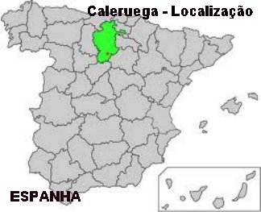
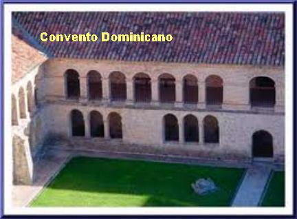

"IMAGENS"
 
"CONVITE"
Este Site foi construído pelo APOSTOLADO DOS SAGRADOS CORAÇÕES. Clique no endereço abaixo para visitar o nosso PORTAL. Nele encontrará uma apreciável quantidade de Sites sobre o CRIADOR, o ESPÍRITO SANTO, JESUS DE NAZARÉ, sobre NOSSA SENHORA, os ANJOS DO SENHOR e Sites que apresentam a Vida e Obra de diversos SANTOS. Todos eles fundamentados na Sagrada Escritura, na Tradição Cristã, na Vida e Obra dos Santos e nas Manifestações Sobrenaturais, com a intenção de somente informar a Verdade.
http://www.apostoladosagradoscoracoes.com/
"E-MAIL"
Desejando comunicar-se conosco, por favor clique na figura abaixo:

"FIRMAS DE BUSCAS"